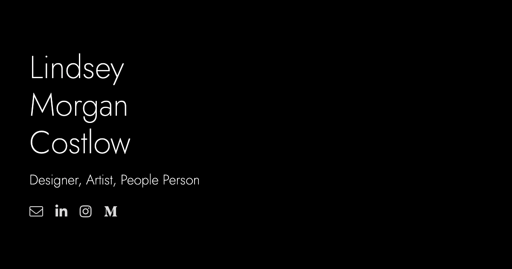

Lindsey
Morgan
Costlow
Designer, Artist, People Person
ArtHaus
Young artists need a new, fulfilling way to share their art with their community. I'm designing an app that aims to solve that.
I am currently in the process of designing a social app for artists.
The Problem: Many young artists are not satisfied with current social media options for sharing their art. These same young people are exceedingly lonely, as this October 2020 Harvard study found that 61% of participants 18-25 experienced loneliness "almost all of the time or all of the time."
The Process: Since there are inumerable social apps, I had a distinct framework to work off of. I used Instagram, VSCO, Reddit, and Twitter's apps to research these standards.
The Goal: I want to create a location based platform for artists to post their work and engage with others in their city. My thinking here is that relationships built on this platform will have the capability of becoming face to face, given proper modern safety precautions, which gives the relationships real potential, as well as a greater sense of viability and tangibility.
The Design: I am currently in the fourth iteration of the design. Here's how my wireframes and mockups have evolved.
Retirement Budget Calculator
I recently redesigned the landing page of Retirement Budget Calculator to make it feel modern and approachable, especially to the retiree population.
Recently the CTO of Retirement Budget Calculator, a mentor of mine, reached out to me about redesigning the home page of the site, which was originally built by a developer. Here's how it looked when I started...
The priorities were to 1. modernize the site, namely with a new headings font. 2. to humanize the site with age appropriate, joyful stock photos. 3. to design with comfortable white space. I also wanted to polish up the color scheme, and we ran a 99Designs contest for a new logo simultaneously.
Here's my final mockup...

As my ideas for the site evolved, I noticed that I was continuously going for a fun vibe, that would still come off as trustworthy. I'm really happy with how the hero image ties into this.
With a tool as crucial as a retirement planner, I knew it was important to establish credibilty. On the original site design the testimonials were laid out uninterestingly, and were entirely ignorable. To make them pop I gave them their own distinct section with plenty of padding, as well as individual focus through a timed slideshow. Presenting a comfortable amount of information makes it much more readable.
Another important way I established trustworthiness was highlighting the "As Seen & Heard On" section
Check out the rebuilt site here!
Plenti
I'm currently collaborating with two developers to redesign the app Plenti. Plenti is a neighborhood crop sharing platform for promoting community and self-sustainability.
As a side project, two developers and I are reworking the app Plenti. It's currently available for download on Apple and Android, and we're hoping to release 2.0 in late may.
Since there're only three of us working on this project, I find myself wearing more hats than usual. The app is built off material design, so I don't have too much freedom in terms of elements, but I'm spending almost as much time on fleshing out features and streamlining user flows.

Originally the only way to find food you were looking for was a search function that would make you scroll through cards of all possible fruit or vegetable options, click on the one you were looking for, and hope somebody would have some listed.
When a user would list their produce, they would select whether they had "a little", "some" "a lot", or "many". I found those categorizations a little confusing, so we've removed "many", but kept the system since it must apply to each type of produce.
Now the main crop finding feature is a feed of everything posted near you, sorted chronologically, with a slider to set max distance in the settings.
This new feature also includes users being able to upload photos of their produce, which definitely brings a new level of personal connection to the app.
These user uploaded pictures will also show up on the profile page of premium users, where they can curate a gallery of what they've grown, and food they've made.


If you’re anything like me, you’re probably tired of LinkedIn. The whole site has an outdated vibe, and the home page is overwhelmingly cluttered. I think its high time LinkedIn got a new look. Maybe something like this…

As any designer understands, too much information on a page is bound to drive away users. That is what LinkedIn did to me at first. Until it became too important to not use.
As Oksana Tunikova put it, “There is only a certain amount of information a human brain can process at one time.”
That idea formed the basis for my unsolicited redesign of the home page. I took the most important aspects and pared it all down, using HTML & CSS, into a digestible yet still robust platform.
Investopedia took LinkedIn’s public revenue information, and determined that “65% of third-quarter revenue, totaling $960 million, came from recruitment services.” This means that LinkedIn’s job network is arguably the most important aspect of the site. Recruitment services is followed by ads on the site, which makes up 18% of revenue, and the remaining 17% is from premium memberships.
With these statistics, I had a much better idea of what to prioritize in my redesign. I kept the promoted jobs, posts, and sidebar ads with a similar ratio of content to ads as the current LinkedIn. Additionally I added a Jobs section to the left column, which is prime, eye-catching real estate that is currently wasted on following hashtags.
Now that you’ve also spent some time thinking about how LinkedIn could be better, go back to it — https://www.linkedin.com/feed/
How does it make you feel?


Hey. I'm Lindsey.
I am a passionate, young creative. I deeply value learning and honest evaluation. I am illuminated by collaboration and ambition. I'm currently searching for an entry level user experience design position, where I can contribute my love for designing for the user.
My favorite things include sunlight, drawing (check my instagram), and making new friends.
